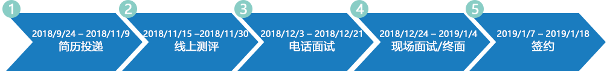

沃特世公司创始于1958年，是全球领先的分析实验室技术开发商及制造商。沃特世专注于推动当今前沿分析实验室技术的应用，包括液相色谱、质谱和相关化学耗材及信息化解决方案。
自上世纪80年代进入中国以来，沃特世的规模与实力与日俱增，在大陆及香港、台湾均设有运营中心，拥有六百多名本地员工，并在上海、北京、广州、成都设立实验中心和培训中心。
自2003年成立沃特世科技（上海）有限公司以来，今天的中国已成为沃特世全球营收仅次于美国的第二大市场。作为分析科学家的理想合作伙伴，沃特世始终坚持提高本地技术能力、支持本地技术人才培育，并推动制药、食品安全、健康科学、环境保护等相关行业标准和法规的建立和完善。
凭借出众的人才与全球布局，沃特世已经为其商业合作伙伴创造了显著的价值，并致力于满足广大中国消费者对更美好生活的需求。
作为分析科学家的理想合作伙伴，沃特世始终坚持提高本地技术能力、支持本地技术人才培育。每一位校招新员工都有机会轮岗到沃特世的各个核心部门，综合兴趣爱好和能力优势，精准定位自己的职业发展之路。
应用科学家（上海）
●你将会——同Waters及行业内的专家一同协作，关注市场应用热点！攻坚克难！不断创新！
●你需要——具备扎实的分析功底、丰富的专业知识、饱满的工作热情、沉稳的工作态度！
●你将获得——丰富的应用经验，接触最前沿的科技，成为行业顶级技术专家！获的客户认可的同时实现自我的价值！
应用科学家（广州）
●你将会——同Waters及行业内的专家一同协作，关注市场应用热点！攻坚克难！不断创新！
●你需要——具备扎实的分析功底、丰富的专业知识、饱满的工作热情、沉稳的工作态度！
●你将获得——丰富的应用经验，接触最前沿的科技，成为行业顶级技术专家！获的客户认可的同时实现自我的价值！
应用科学家（北京）
●你将会——同Waters及行业内的专家一同协作，关注市场应用热点！攻坚克难！不断创新！
●你需要——具备扎实的分析功底、丰富的专业知识、饱满的工作热情、沉稳的工作态度！
●你将获得——丰富的应用经验，接触最前沿的科技，成为行业顶级技术专家！获的客户认可的同时实现自我的价值！
业务拓展顾问（上海）
●你将会——路演客制化整体方案，驱动区域项目进程，耕耘各类市场机会，组织大小市场活动。
● 你需要——液相或者液质联用系统使用经验，分析及生命科学领域背景。主动积极的协调能力、学习能力，永不言弃的
团队精神。
●你将获得——敏锐的市场洞察力，发挥潜能的舞台，包容暖心的团队。
业务拓展顾问（广州）
●你将会——路演客制化整体方案，驱动区域项目进程，耕耘各类市场机会，组织大小市场活动。
● 你需要——液相或者液质联用系统使用经验，分析及生命科学领域背景。主动积极的协调能力、学习能力，永不言弃的
团队精神。
●你将获得——敏锐的市场洞察力，发挥潜能的舞台，包容暖心的团队。
业务拓展顾问（北京）
●你将会——路演客制化整体方案，驱动区域项目进程，耕耘各类市场机会，组织大小市场活动。
● 你需要——液相或者液质联用系统使用经验，分析及生命科学领域背景。主动积极的协调能力、学习能力，永不言弃的
团队精神。
●你将获得——敏锐的市场洞察力，发挥潜能的舞台，包容暖心的团队。
销售工程师/客户顾问（上海）
●你将会——以热诚的态度、清晰的语言，把握客户端现状，拓展潜力机会，助力客户成功。
●你需要——来自化学、食品、制药、生物等相关专业；有LC或LCMS使用经验；日常使用并熟知Waters产品者优先；
有较强的工作抗压能力和团队协作精神。
●你将获得——学习进步、能力提升、客户信任，成就美好人生！
销售工程师/客户顾问（北京）
●你将会——以热诚的态度、清晰的语言，把握客户端现状，拓展潜力机会，助力客户成功。
●你需要——来自化学、食品、制药、生物等相关专业；有LC或LCMS使用经验；日常使用并熟知Waters产品者优先；
有较强的工作抗压能力和团队协作精神。
●你将获得——学习进步、能力提升、客户信任，成就美好人生！
售后服务工程师（上海）
●你将会——通过安装，维护，维修，培训，在线支持等手段，为用户提供专业高品质的售后支持。
●你需要——化学或电子仪器相关专业，本科及以上学历。有较强的工作抗压性及团队工作能力。
●你将获得——不断更新的技术，活力融合的团队，各行业客户的信赖。
售后服务工程师（广州）
●你将会——通过安装，维护，维修，培训，在线支持等手段，为用户提供专业高品质的售后支持。
●你需要——化学或电子仪器相关专业，本科及以上学历。有较强的工作抗压性及团队工作能力。
●你将获得——不断更新的技术，活力融合的团队，各行业客户的信赖。
售后服务工程师（北京）
●你将会——通过安装，维护，维修，培训，在线支持等手段，为用户提供专业高品质的售后支持。
●你需要——化学或电子仪器相关专业，本科及以上学历。有较强的工作抗压性及团队工作能力。
●你将获得——不断更新的技术，活力融合的团队，各行业客户的信赖。
信息学产品实施工程师（上海）
●你将会——帮助客户完成信息学产品的安装、部署和培训，通过引入先进的实验室信息化工具提高工作效率、
解决质量难题。
●你需要——化学、生物或药学专业背景同时对软件技术有强烈的兴趣；或是计算机相关专业背景并致力于实验室信息化
细分领域。
●你将获得——最先进的实验室信息化产品技术，完善的软件产品培训，家人般的团队。
信息学产品实施工程师（北京）
●你将会——帮助客户完成信息学产品的安装、部署和培训，通过引入先进的实验室信息化工具提高工作效率、
解决质量难题。
●你需要——化学、生物或药学专业背景同时对软件技术有强烈的兴趣；或是计算机相关专业背景并致力于实验室信息化
细分领域。
●你将获得——最先进的实验室信息化产品技术，完善的软件产品培训，家人般的团队。
●沃特世核心岗位，等你来加入！
●所有校招新员工将在实验室（上海/北京）和消耗品团队（上海）培训轮岗2年。
沃特世2019校园招聘现已全面启动！我们期待与你面对面的交流与分享，在此邀请你参加我们的宣讲活动。
| 城市 | 学校 | 日期 | 时间 | 地点 |
|---|---|---|---|---|
| 北京 | 北京化工大学 | 2018.10.17 | 18:30-20:30 | 会议中心中心会议室 |
| 南京 | 中国药科大学（江宁校区） | 2018.10.24 | 18:30-20:30 | E105阶梯教室 |
另有2场公司参观日彩蛋等你来发掘，敬请关注沃特世官方微信公众号！
